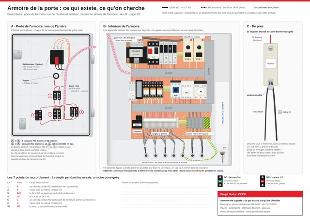
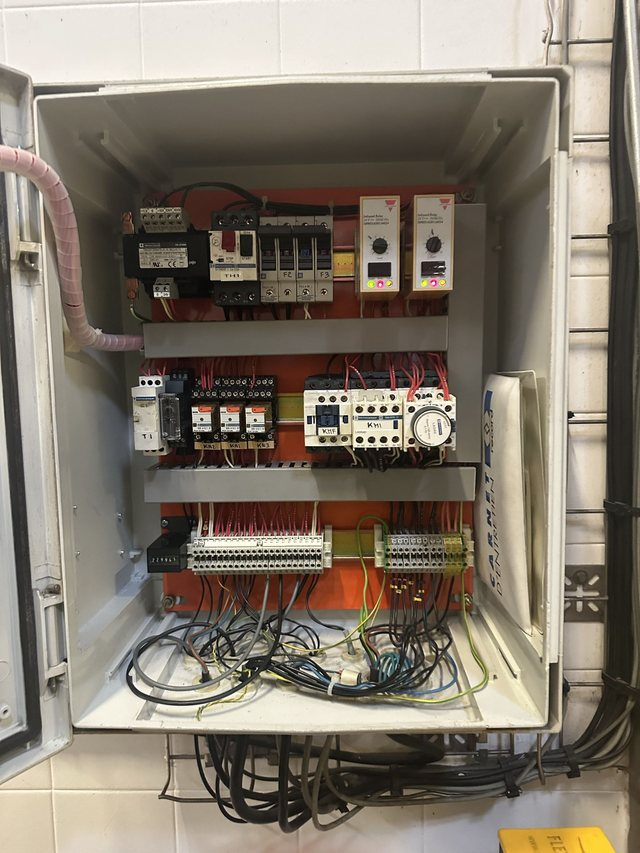
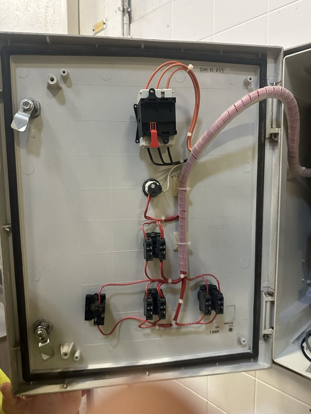

-

ImagePlan de l'armoire (page 2 du plan)
Porte vue de l'arrière et intérieur avec tous leurs fils, et le tableau des 7 points à remplir pendant les essais.
-
 PDF
PDFPlan de câblage A3, 2 pages (PDF)
Page 1 : le boîtier. Page 2 : l'armoire. À imprimer en A3.
-

PhotoPhoto : intérieur de l'armoire
Armoire GE ARIA L de la porte pilote.
-

PhotoPhoto : porte de l'armoire, vue de l'arrière
Sectionneur, voyant, blocs de contacts et gaine vers la charnière.
-
SVG
SVG
Plan de l'armoire (SVG)
Le même plan en vectoriel, pour zoomer sans perte.